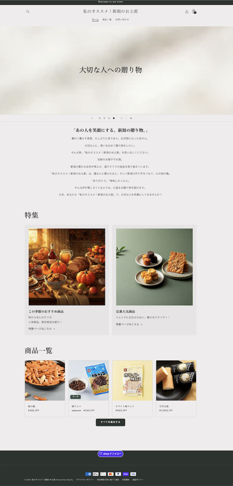
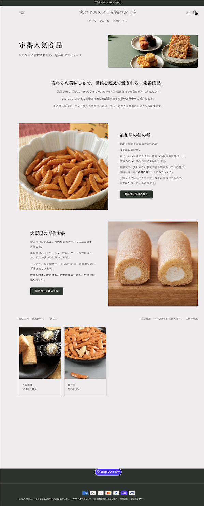
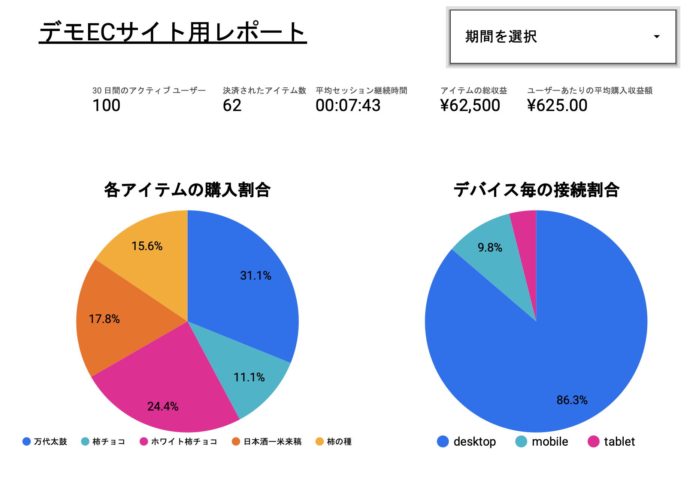
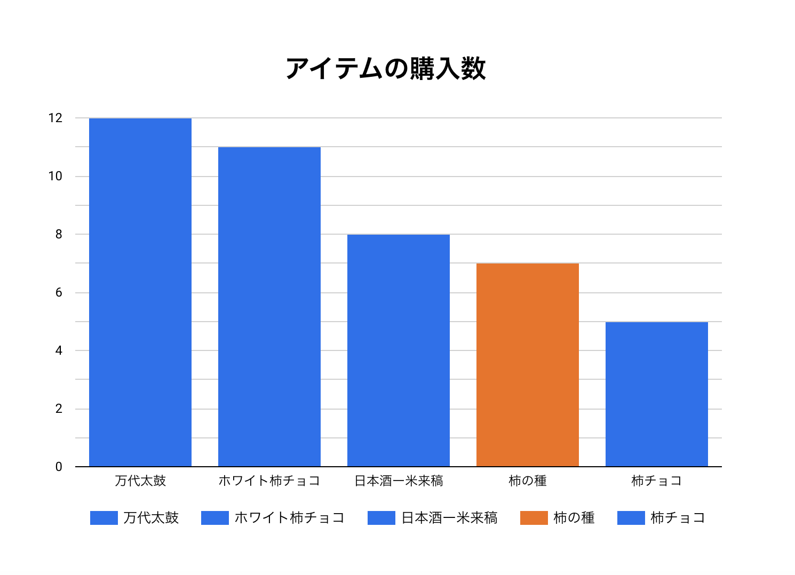
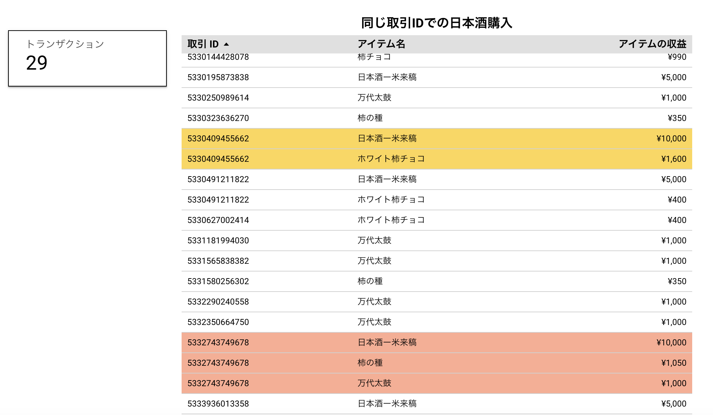
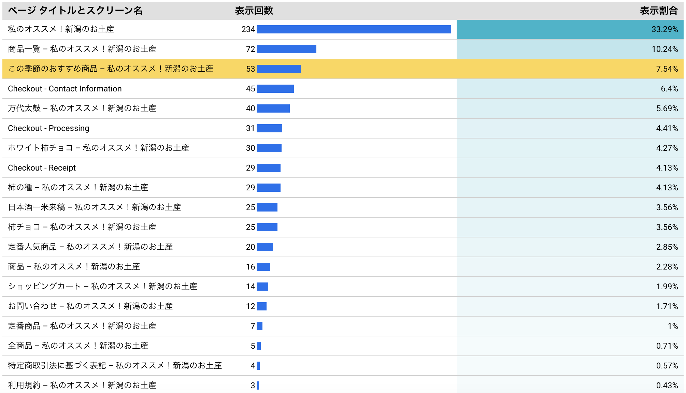
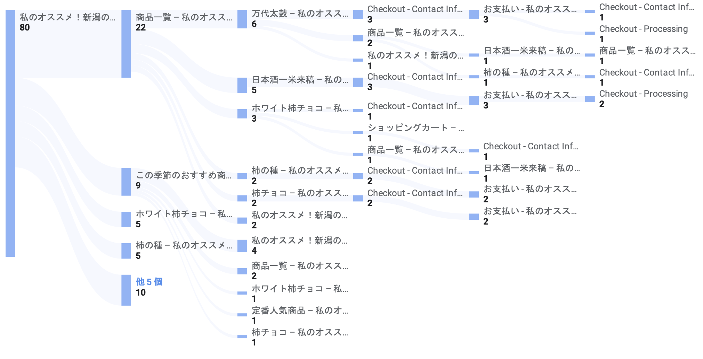

ECサイト作成およびデータ分析
・使用ツール：
- Shopify：ECサイト作成
- Google Analytics4：データ収集・データ分析
- Looker Studio：データ可視化・データ分析
- Notion：タスク管理
- Slack：各種連絡
- Google Meet：朝会議・発表
- Google Trends：各種調査
- Lancers：アンケート依頼
- Gemini：⽂章作成など
- ImageFX：画像⽣成 など
・内容：
これは、大学の臨地実務実習というもので、1ヶ月間企業において実習した際に行ったものとなります。
ここでの目的としては、ECサイトを通じて「新潟独自」の物販を行うことを想定し、データ利活用ノウハウを活かして、より売れるためのサイトチューニングを行うことでした。
作業工程を大きく分けると、以下のようなことを行いました。
- 各種調査
- 商品選定
- ShopifyによるECサイト作成
- Google Analytics4との連携・設定
- アンケート内容作成・依頼
- Looker Studioによるデータ可視化
- データ分析
- ECサイト改善案の考察
- 実習内容の発表
・実際に作成したECサイトの参考画像


・上記デモサイトを限定公開し、データ分析した際の一部資料





・データ分析からの改善案
- あまり有名ではない、珍しい商品を多くする
- ⽇本酒の関連商品として、お菓⼦よりも他の⽇本酒を充実させる
- 優先順位は低いが、商品画像などを増やすことにより、より魅⼒が伝わるようにする
- ⽂章をより短めにする、または、⽂章の質を⾼める
特に1.に関しては、事前調査において、Google Trendsで柿の種は、他の都道府県の有名なお菓子と比較しても検索する人が多く、有名であることが伺えた。
一方で、デモサイトでの購買行動およびLancers内でのアンケート結果を利用したデータ分析をしたところ、全く支持を得なかった。
これに関して、アンケートでの理由において、「よく見かけるから」や「物珍しい商品ではないから」という意見が多かった。
そのため、ECサイトにおいて、有名である商品よりも珍しい商品を多くすることが重要であることが伺えた。